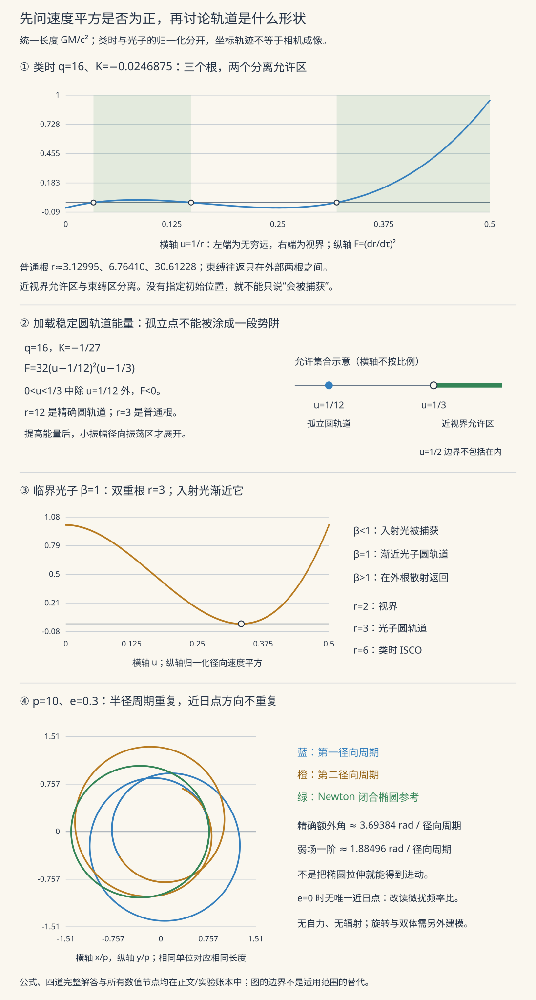

本页目录
广相 II · Einstein 方程与 Schwarzschild 解
对标：Carroll §4–5 ｜ 前置：gr-01、流形几何 IV（Ricci/Bianchi） 本页立起理论的心脏——Einstein 场方程（物质告诉时空怎么弯），并求出它最著名的精确解——Schwarzschild 时空（球对称真空），随即收割三大经典检验：水星进动、光线弯曲、雷达延迟。
学习层：把 Schwarzschild 圆轨道读成一条势能曲线
1. 先钉住范围：哪一个定理、哪一种粒子？
本学习层只讨论 Schwarzschild 外部的类时、赤道面测地线：粒子满足 \(u^\mu u_\mu=-1\)，取 \(θ=\pi/2\)，并且始终在 \(r>2\)。这里使用几何单位 \(G=M=c=1\)；长度 \(r\) 已用 \(GM/c^2\) 归一化，固有时 \(\tau\) 用 \(GM/c^3\) 归一化，\(E\) 是单位静质量的守恒能量，\(\ell\) 是单位静质量的守恒角动量（以 \(GM/c\) 为单位）。这不是在视界内积分，也不是光子的 null 测地线。
Birkhoff 定理的适用条件要说完整：在四维 Einstein 引力中，一个足够光滑、球对称的真空区域（\(T_{\mu\nu}=0\)，本页取 \(\Lambda=0\)，\(r\) 是面积半径）在合适的局部坐标片上必为 Schwarzschild，并在 \(\nabla r\) 为类空的外部片上静态。它是局部真空结论，不负责物质源的内部、全局延拓或非球对称扰动；若保留 \(\Lambda\ne0\)，相应答案是 Schwarzschild–(A)dS，而非本页的渐近平直 Schwarzschild 外部。
2. 有效势的归一化：能量水平就是一条水平线
从
得到本实验采用的唯一归一化：
因此允许区满足 \(K\ge V_{\rm eff}\)，等号是转向点；若等号同时在势的极值处，就是圆轨道。这里的 \(V_{\rm eff}\) 已经把静质量和 \(c\) 等尺度吸收进去，不能再把它和未归一化的 Newton 势或 null 有效势直接比较。
3. 先预测，再拖动：固定 ℓ 会看到什么？
由
可见阈值是 \(\ell^2=12\)。当 \(\ell^2<12\) 时没有两个外部极值，因而没有圆轨道势垒；当 \(\ell^2>12\) 时
其中内支 \(r_-\) 是势垒顶、不稳定，外支 \(r_+\) 是势阱底、稳定。在阈值 \(\ell^2=12\) 两支合并于 \(r=6\)，这才是 Schwarzschild 类时稳定圆轨道族的内边界，即 ISCO（innermost stable circular orbit）。所以“\(L\) 再大也存在 ISCO \(r=6\)”是混淆：ISCO 不是任意固定 \(\ell\) 的稳定半径；固定 \(\ell>\sqrt{12}\) 有两支，且外支随 \(\ell\) 增大而向外移动。
图上另外标出 \(r=2\)（horizon）与 \(r=3\)（photon sphere）只是尺度参照：\(r=3\) 属于 null 测地线的光子圆轨道，光子要用另一套 null 有效势；它既不是本实验的类时 ISCO，也不能把 \(r=2,3,6\) 统称成 EHT 光环。EHT 的成像环是光传播、引力透镜和发射分布共同形成的观测结构，不能由一条类时粒子势曲线直接等同推出。
4. Schwarzschild 有效势实验
下面的确定性实验用 \(\ell\) 和 \(E\) 两个滑杆重画 \(V_{\rm eff}\) 与 \(K\)，标出稳定/不稳定圆轨道、允许区和转向点，并把所有输入与根放进数值账本。滑杆改变的是同一个归一化模型；没有随机抽样，也没有把交互历史累积到图中。
无 JavaScript 时的静态读法：固定 \(\ell\) 后画 \(V_{\rm eff}(r)\)，再画 \(K=(E^2-1)/2\)。阴影允许区满足 \(K\ge V_{\rm eff}\)，交点是转向点；\(\ell^2>12\) 时内支 \(r_-\) 不稳定、外支 \(r_+\) 稳定，\(\ell^2=12\) 时两支在 \(r=6\) 合并为 ISCO。
| 预设 | \(\ell\)、\(\ell^2\) | \(E\) | 读图目的 |
|---|---|---|---|
| 无势垒 | \(2.5\)、\(6.25\) | \(1.05\) | \(\ell^2<12\)，没有圆轨道极值 |
| ISCO | \(\sqrt{12}\)、\(12\) | \(\sqrt{8/9}\) | 两支合并于 \(r=6\)，为临界稳定 |
| 束缚轨道 | \(4\)、\(16\) | \(0.975\) | 外支 \(r_+=12\) 的势阱与有限允许区 |
| 高角动量 | \(6.5\)、\(42.25\) | \(1.02\) | \(r_-=3.25\) 不稳定、\(r_+=39\) 稳定；\(r=3\) 仍只是 null 参照 |
迁移问题：若把实验对象改成光子，能否只把 \(E\) 滑杆改成某个值继续使用这条类时曲线？先作答，再用“检查迁移答案”核对：不能，null 测地线要从 \(d\tau=0\) 重新得到另一套有效势；\(r=3\) 的 photon sphere 不能被当成这里的 ISCO。
1. Einstein 场方程
需求清单：张量方程（广义协变）；源 = 能动张量 \(T_{\mu\nu}\)（sr-01 四动量的场版——能量密度/动量流/应力打包）；守恒 \(\nabla^\mu T_{\mu\nu} = 0\) 须自动成立；牛顿极限回收 Poisson 方程 \(\nabla^2\Phi = 4\pi G\rho\)。
唯一答案【构造级论证】：几何侧要一个"二阶导、对称、自动无散"的张量——Bianchi 恒等式（流形 IV）说 Einstein 张量 \(G_{\mu\nu} = R_{\mu\nu} - \frac12 R\,g_{\mu\nu}\) 恰好 \(\nabla^\mu G_{\mu\nu} \equiv 0\)（几何恒等式 ⇒ 能量守恒不是附加假设而是结构自带）：
系数由牛顿极限定标【骨架：弱场线性化 \(g = \eta + h\)，\(G_{00} \approx -\frac12\nabla^2h_{00}\) 对上 Poisson】。\(\Lambda\)：宇宙学常数——数学允许的唯一附加项（cosmo 线的主角，暗能量的席位）。10 条非线性耦合 PDE（非线性 = 引力场自己有能量、自己造引力——与电磁的线性叠加的本质区别；也是精确解稀缺的原因）。变分出身一嘴：Einstein–Hilbert 作用量 \(S = \frac{c^4}{16\pi G}\int R\sqrt{-g}\,d^4x\)——mech-02 的哲学统治到引力（"曲率标量是最简单的协变拉氏量"）。
2. Schwarzschild 解

定理（Schwarzschild 1916 / Birkhoff，条件限定） 在 \(T_{\mu\nu}=0\)、\(\Lambda=0\) 的足够光滑球对称真空区域内，使用面积半径 \(r\) 的解在局部上唯一为 Schwarzschild；外部 \(r>r_s\) 的坐标片是静态的。这里的“唯一”是局部真空结论，不包含物质内部、全局延拓或非球对称扰动；若 \(\Lambda\ne0\)，对应的是 Schwarzschild–(A)dS：
【骨架】 球对称 ansatz \(ds^2 = -e^{2\alpha(r)}dt^2 + e^{2\beta(r)}dr^2 + r^2d\Omega^2\) 代入 \(R_{\mu\nu} = 0\)：两条独立 ODE 给 \(\alpha = -\beta\) 与 \((re^{2\alpha})' = 1\)——积分即得；常数由牛顿极限对号（\(g_{00} \to -(1 + \frac{2\Phi}{c^2})\)，gr-01 字典）。\(\blacksquare\)（Birkhoff：球对称自动静态——球对称脉动不辐射引力波：ced-02"无偶极辐射"的引力版预告。）
Schwarzschild 半径：太阳 3 km、地球 9 mm——普通天体的 \(r_s\) 深埋体内（外部解照用）；本页学习层只取外部 \(r>r_s\)，\(r \leq r_s\) 的完整故事（视界、黑洞）留给 gr-03。
3. 三大经典检验（测地线的收割）
Schwarzschild 测地线：对称性给两个守恒量（能量 \(E\)、角动量——Killing 矢量，Noether/流形语言），化为一维有效势问题（mech-01 的方法在弯曲时空重演）。为避免把不同单位的势混在一起，以下速查式也采用 \(G=M=c=1\)、\(r\) 以 \(GM/c^2\) 为单位，并只对外部类时赤道测地线成立：
其中 \(\tau\) 已按 \(GM/c^3\) 归一化，\(\ell\) 按 \(GM/c\) 归一化；这就是本页实验的有效势归一化。光子满足的是 null 条件，不能把这条类时势直接套到光线上。
水星近日点进动【推导骨架】：新 \(\frac{1}{r^3}\) 项微扰 Kepler 轨道（qm-04 式的微扰思路用在轨道方程上）：每圈进动
——牛顿力学解释不了的著名残差被一分不差吃下（Einstein 自述算出此数时"心悸数日"）。
光线弯曲：光测地线（\(d\tau = 0\)）同法：擦日偏转 \(\theta = \frac{4GM}{c^2R_\odot} = 1.75''\)——恰是"牛顿粒子说"值的两倍（空间弯曲贡献另一半——gr-01 §3"低速只看时间部分"的反面：光够快，空间部分平权）。1919 年 Eddington 日食观测 ✓——广相登上世界头条的时刻；现代版：引力透镜（星系团的光弧、微透镜找系外行星/暗物质——弯光从检验变成了望远镜）。
Shapiro 雷达延迟：掠日雷达信号往返多 ~200 μs【引用】——第四检验；卡西尼号验证至 \(10^{-5}\) 精度。
4. 练习与要点
例 1（进动量级迁移） 同公式用于近双星 PSR B1913+16：进动 4.2°/年（水星的 3.5 万倍）——强场系统把"世纪级效应"变成"年级"；该双星的轨道衰减是引力波的首个证据（gr-03 接力）。
例 2（有效势读图） 在归一化变量中，\(V_{\text{eff}}\) 的新项改变了近距势垒。ISCO 是类时稳定圆轨道族的最内边界：\(\ell^2=12\) 时两支圆轨道在 \(r=6\) 合并并满足 \(V''_{\text{eff}}=0\)；但对任意固定 \(\ell^2>12\)，仍有内侧不稳定支 \(r_-\) 与外侧稳定支 \(r_+\)，不能说“\(\ell\) 再大也固定存在 \(r=6\) 的 ISCO”。\(r=3\) 是 null photon sphere，EHT 光环还涉及光线传播、透镜和发射分布，不能与 ISCO 或 horizon 混为同一个尺度。
例 3（透镜小算） 太阳质量恒星在 1 kpc 处：Einstein 环半径 \(\theta_E = \sqrt{\frac{4GM}{c^2}\frac{D_{LS}}{D_LD_S}} \sim\) mas 级——微透镜光变曲线的时标 ~ 周：OGLE 类巡天找暗天体的设计参数。\(\blacksquare\)
下一页：把解推进视界之内——黑洞、引力波与宇宙学度规：广相的三大前沿出口一次打通。